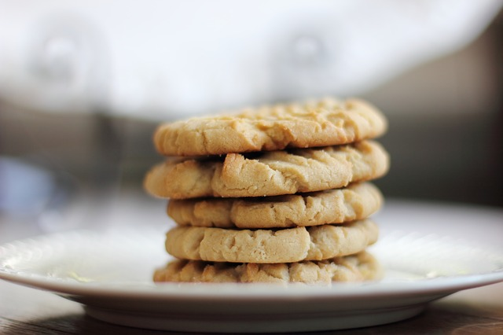

Three-ingredient Peanut Butter Cookies

Do you have peanut butter? Do you have at least 2 eggs? Do you have sugar? Then you can have peanut butter cookies in your near future, my friend.
Ingredients:
- 18 ounces of peanut butter; there are 18oz jars sold
- 2 eggs
- 1 and 1/4 cups sugar
- An additional 1/2 cup sugar for rolling the cookies in
Steps:
- Preheat your oven to 350F.
- Add 1 and 1/4 cup sugar, the peanut butter, and eggs together in a large mixing bowl.
- Once incorporated, roll dough-like mixture into inch-sized balls.
- Add the sugar set aside for rolling in a bowl and coat your peanut butter balls.
- Try and place the balls on a cookie sheet about the same width apart as you made the cookies.
- Cooking time is around 12 minutes or until the cookies are slighly more brown and cracking on top.
- These cookies are pretty delicate coming out of the oven, so wait a couple minutes after taking them out; then, carefully lay them on a cooling rack.
- Wait . . . yes, wait - for about 10 minutes.
- Now enjoy.
Makes around 35 cookies.